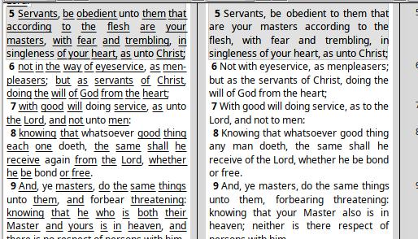
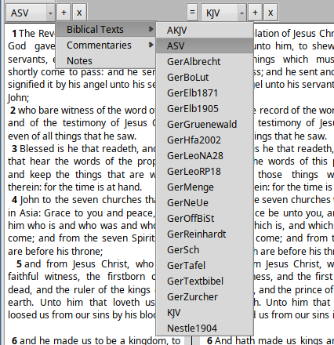
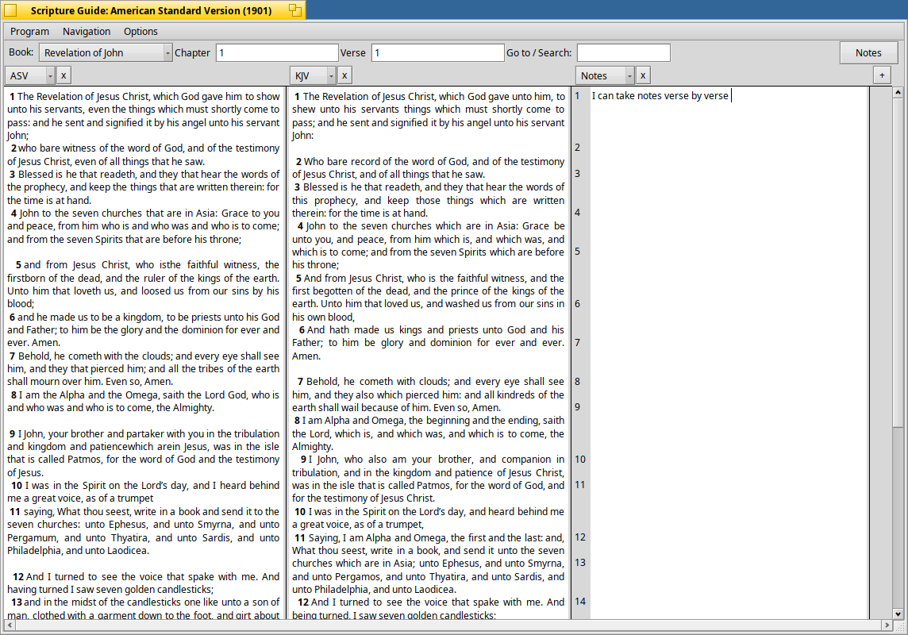
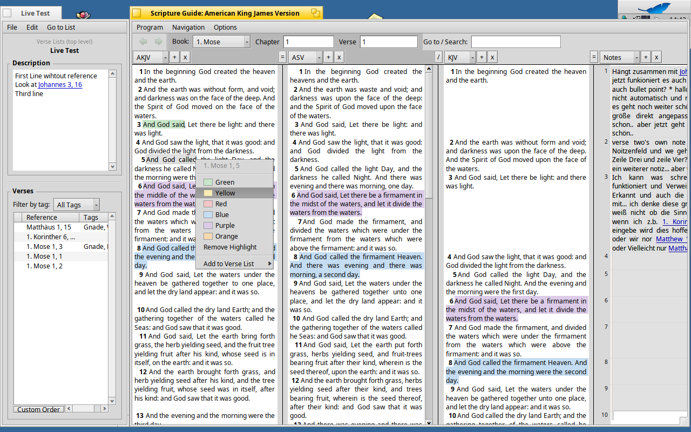
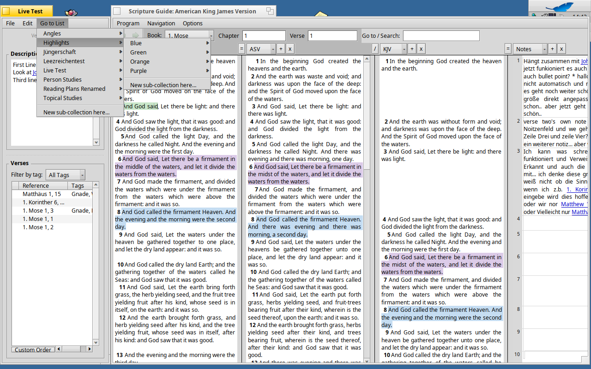
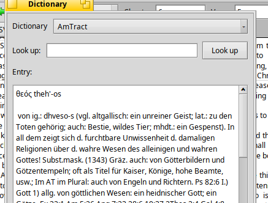
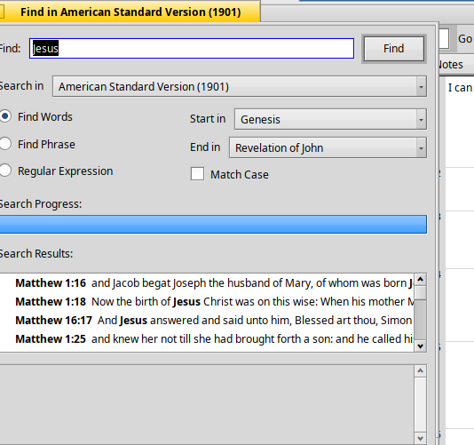
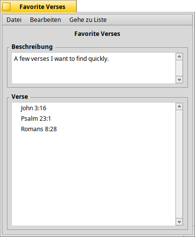
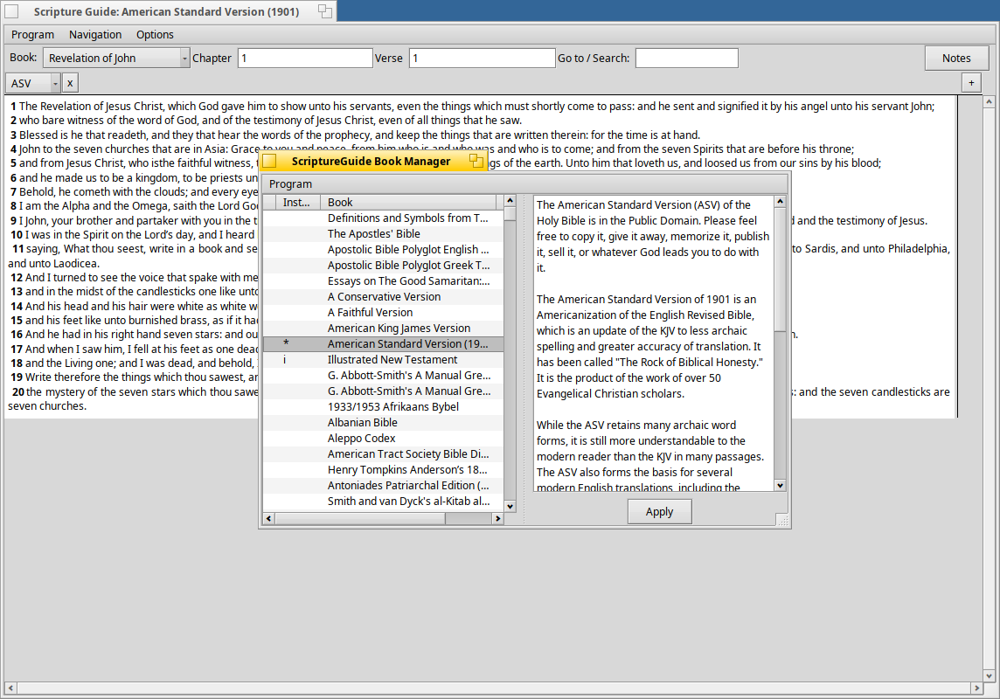

English · Deutsch
The reading pane shows any number of translations, commentaries and personal-notes columns side by side. Rows are aligned on the verse, so the same verse sits at the same height in every column however differently the translations wrap:

Each column has its own header with a drop-down to switch it to any installed Bible or commentary, a + button that inserts a new column right after it, and an x that removes it. The drop-down groups what is installed by kind, with a Notes entry for turning the column into a notes column:

Selecting text inside one column works like ordinary text selection. As soon as a selection spans more than one column it snaps to whole verses -- translations rarely agree on where a sentence, let alone a word, ends, so the verse is the only unit that lines up across all of them. Drag a selection to another column, to the Desktop as a text clipping, or into another application; dragging a reference back into a column navigates there.
A column showing nothing for the current chapter usually means that book or chapter simply isn't in that module -- Genesis in a New Testament, or a commentary with no entry for the chapter.
Columns are joined into groups that scroll and navigate together. The small button between two headers shows whether they are joined (=) or separate (/); click it to change that:
Here the first three columns form one group and the last one stands on its own -- so it can sit on a different book entirely while the others stay together. Each group keeps its own chapter, its own scroll position and its own alignment. The book, chapter and verse fields in the toolbar always move the active group: the one you last clicked in, marked by the same shading the fields themselves have.
The back and forward arrows step through where you have been, the way a browser does -- following a cross-reference moves the group you were reading in, so this is how you get back.
Book, Chapter and Verse navigate the active column group; they carry the same shading as that group's headers to show which one they will move.
Go to / Search is one field for both jobs: type a reference such
as John 3:16 and press Enter to jump straight there;
type anything else and the search window opens with that search already
running. Notes adds or removes a notes column.

A notes column is edited directly: click where you want to type and the cursor lands there, select and copy across verses, walk from one verse's note into the next with the arrow keys. Enter starts a new line within the same note. Verse numbers run down the left edge, and a note's row grows as you type, keeping it beside the verse it belongs to.
Notes save themselves as you type -- there is no save command. They live
in
/boot/home/config/settings/scriptureguide/notes as a SWORD
module of their own, created the first time you write one. A reference typed into a note becomes a
link, as in the illustration.
You can have more than one notes column, in different groups, each beside a different passage. Your notes can be searched like any other text: they appear in the search window's Search in menu. Dragging a selection of Bible text onto a note inserts the text together with its reference, which becomes a link.
Select text in a column and let go: a menu appears offering six muted colours. Click one and the passage keeps it. The same menu removes a mark again, and adds the selection to a verse list.

A mark made inside one translation belongs to exactly those words in that translation. Dragging a selection across columns snaps to whole verses, as described above, and stores a verse-wide mark instead, shown in every column at once, including columns added later.
A highlight is an ordinary verse-list entry that carries a colour, kept in a Highlights collection with one folder per colour. So Go to List reaches your marks like any other list, Tracker browses them, and Copy to moves one into a real verse list. A colour folder can be renamed freely. Options → Highlight Colours switches individual colours on and off.

References found in commentary or note text (see Mt 16:18)
are shown as links; clicking one navigates the group it is in. Use
back to return.
In modules that carry them, Strong's-tagged words look like ordinary text. Hovering over one underlines it and shows a tooltip at once with its Strong's number and a short gloss from the installed lexicon; the tooltip stays while you move within the word. Clicking the word opens the dictionary at its entry and lights up every other word with the same number in the chapter, in every open column.
This needs the matching dictionary installed --
StrongsGreek for the New Testament,
StrongsHebrew for the Old. Both are in the Book Manager's list.
Until one is installed, its numbers are simply shown as ordinary text rather
than as links that could not lead anywhere.
Program → Dictionary opens the dictionary window; clicking a Strong's-tagged word opens it at that word. Choose a dictionary or lexicon at the top. The sidebar lists every entry of it, so you can browse the whole lexicon, not just look up one word; the divider between the sidebar and the entry can be dragged. Type into Look up to jump to an entry.

Bible references inside an entry are links, and so are references to
other Strong's numbers, such as see GREEK for 25 or the German
vgl.. For a Strong's number, the Show Hits Chart
button shows where it occurs in the Bible chosen under Search
in.
Most entries have a keyboard shortcut shown beside them. Copy Comparison puts every open column's text for the current chapter on the clipboard as a verse-by-verse table, ready to paste into a spreadsheet or a document.

Typing something that isn't a reference into Go to / Search opens the search window with that search running. Search in offers every installed Bible and commentary, and your own notes, with the one you are reading already selected.
Results are listed on the left, with the surrounding verses of the
selected result below. Double-clicking a result opens it in a new window.
The search can be limited to a range of books, made case-sensitive, and set
to match any of the words, an exact phrase, or a regular expression. For
regular expressions, P[^ ]+ matches any word starting with "P";
the slashes often written around them elsewhere (/like this/)
are not used here.
The fourth mode, Strong's Number, is for word study: type a number
such as G26 or H7456 and it finds every verse
using the same original-language word, in a module that carries Strong's
tags. Hits the module's own word tags do not actually support are left
out.
Show Hits Chart draws where a set of verses falls in the Bible: one row per book with a square per chapter, shaded by how many hits it has, and a treemap of hits per book. Hovering over a square lists that chapter's hits. It is available for search results, for a Strong's number in the dictionary, and for a verse list. Each of these windows keeps its own chart, so two can be compared side by side, and updates it in place when its results change. A chart can be printed.
Program → Verse Lists opens a separate window for building named collections of references — a reading plan, a topical study, whatever grouping makes sense. Clicking an entry navigates the reading pane straight to that verse.

Each collection is a folder, one small file per reference, so Tracker can browse and sort it too. Collections can be nested; Go to List reaches into them at any depth; clicking the list's name at the top opens it too, and its right-click menu renames the list. Changes made outside the app — in Tracker, or by another instance — appear without reopening the window.
Entries can carry tags, and Filter by tag shows only those with one. File → Import Text List takes several text files at once; each becomes a new list of its own, named after its file. Export Text List writes the open list back out, and Close List empties the window.
Program → Print prints the reading pane: the current chapter of the active column group, one translation after the other. Two settings in the Options menu shape it: whether each translation starts on a new page, and whether highlight colours are printed. Verse numbers are printed when they are shown.
In the Verse Lists window, File → Print prints the list, either as references only or with each verse's text. To get a PDF, choose Haiku's Print to PDF printer.
ScriptureGuide follows your system language. The German translation is
complete; Spanish, French, Croatian, Dutch, Romanian and Russian cover the
older parts of the interface, and newer features appear in English
there. Verse references follow local convention too: on a German system
Johannes 3, 16 with a comma is both accepted and displayed,
rather than John 3:16 with a colon -- in the Go to / Search
field, in search results, and in dragged reference text alike.
Texts are installed with the Book Manager, from Program → Book Manager (or automatically, if you start ScriptureGuide with nothing installed yet).

Available modules are listed on the left, installed ones on the right. Select one or more and use the arrows to move them across: moving a module to the right installs it, moving it back removes it. The work starts as soon as you move something -- removal asks first, since it deletes the module's downloaded data. Progress appears on the row itself and in the pane underneath, which also shows a module's description when you select it. Any column can be sorted, including Type, which is useful for finding dictionaries among several hundred Bibles.
The Book Manager fetches its list from crosswire.org over plain, unencrypted HTTP. Accessing religious material online is dangerous in some countries -- please only continue if you are confident that is safe where you are.
/boot/home/config/settings/sword and click Expand.
Ancient Greek modules need a Greek font;
Aristarcoj is
supported and picked automatically once installed. Put it in
/boot/home/config/non-packaged/fonts/ttfonts/, open
Preferences → Fonts and click Rescan, then restart ScriptureGuide.
Please respect the licence the font is provided under.